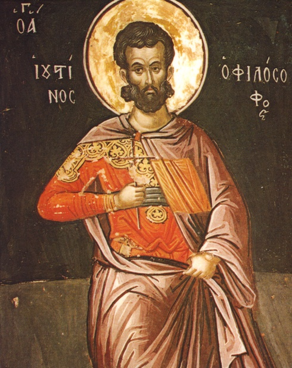
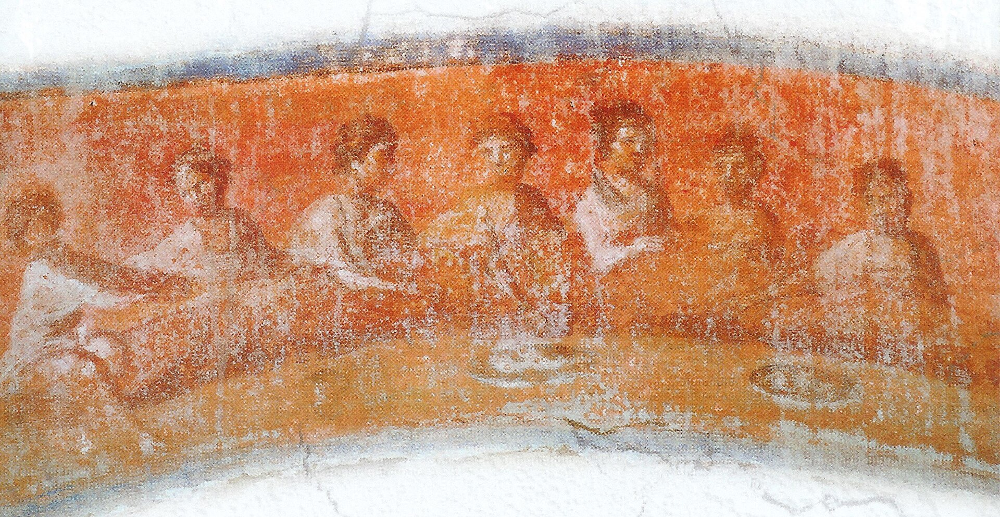

Hacia el año ciento cincuenta, un filósofo convertido escribe en Roma una defensa del cristianismo dirigida al emperador. Explica por qué los cristianos adoran a Jesucristo, y lo explica así: lo tienen «en segundo lugar», y al Espíritu profético «en tercer rango».
El filósofo se llama Justino, morirá mártir y la Iglesia lo cuenta entre sus santos. Y la frase que acaba de escribir, si la escribiera doscientos años después, lo pondría del lado equivocado de una frontera.
El segundo lugar, y el tercer rango
Conviene mirar el griego, porque Justino usa dos palabras distintas y las traducciones suelen fundirlas en una. Al Hijo lo tiene en deutéra chóra, en segundo lugar; al Espíritu en trítē táxei, en tercer rango. No es una repetición: es una graduación, con dos términos tomados del vocabulario filosófico de su tiempo.
Y no es una ocurrencia aislada, porque Justino aplica el mismo esquema a Platón unas páginas más adelante, en la misma obra. Es decir: está usando una estructura de graduación que ya existía, no inventando una cristiana.
En el Diálogo con Trifón va más lejos. Sostiene, contra un interlocutor judío, que «hay, y se dice que hay, otro Dios y Señor bajo el Hacedor de todas las cosas»; que el que apareció a Abrahán, a Jacob y a Moisés es distinto del que hizo todas las cosas; y precisa cómo de distinto: «numéricamente, digo, no en voluntad». El principio que sostiene todo el argumento lo formula al final de la obra: lo engendrado es numéricamente distinto del que engendra.

¿Es esto subordinacionismo? Depende de a quién se pregunte, y conviene no resolverlo de un brochazo. Hay quien lee la ordenación como subordinación económica —de función en la historia de la salvación—, no ontológica, dado que Justino sostiene a la vez la preexistencia del Logos. Y hay quien sostiene, con el mismo texto delante, que el esquema de Justino sencillamente no es trinitario. Las dos lecturas son defendibles y la discusión sigue viva. Lo que no se discute es la frase.
Por eso esta entrega se llama como se llama. En el siglo II, decir que Cristo es un segundo dios no era una provocación: era una manera disponible de decirlo, y la usaba un hombre que murió por su fe y a quien nadie acusó de nada.
Un vocabulario que nace peleando
La palabra «Trinidad» tiene fecha de nacimiento, o al menos su antepasado griego la tiene. Hacia el año ciento ochenta, Teófilo de Antioquía escribe que los tres días anteriores a la creación de los astros son figuras de la triás. Es el primer uso conservado del término.
Y conviene leer la frase entera, porque dice algo distinto de lo que se le hace decir. La tríada de Teófilo es «Dios, su Logos y su Sofía». No es Padre, Hijo y Espíritu Santo: es Dios, su palabra y su sabiduría, una estructura de origen sapiencial judío y filosófico. Decir que Teófilo usó por primera vez la palabra «Trinidad» es literalmente cierto sobre el término y engañoso sobre el referente.
En latín, el responsable es Tertuliano, y lo que hizo exactamente merece precisión. Fue, que conste, el primero en usar trinitas de forma atestiguada — aunque como el griego triás ya existía desde Teófilo, unas tres décadas antes, lo más probable es que calcara el griego y no que inventara de la nada. Substantia y persona no las acuñó: son palabras latinas corrientes que él reespecializó.
Y hay que desmentir una cita que todo el mundo le atribuye. La fórmula «una substantia, tres personae» no aparece como tal en Adversus Praxean. Lo que hay es «de una sola sustancia» y «una sola sustancia en tres que se adhieren». La fórmula canónica es una destilación posterior de Tertuliano, no una frase suya. Si la ve entrecomillada como cita, está mal puesta.
Pero el dato que de verdad importa de Tertuliano no es terminológico, sino de género. Todo ese vocabulario nace dentro de una polémica. Adversus Praxean es, como su nombre indica, un ataque; y el vocabulario trinitario latino se forja ahí, en el calor de una discusión contra alguien, no en una confesión de fe redactada en frío. La sentencia que abre el tratado da el tono: Práxeas hizo en Roma dos obras del diablo, «puso en fuga al Paráclito y crucificó al Padre».

De esa frase sale la etiqueta patripasianismo —«el Padre padeció»—, que los latinos usaron contra sus adversarios modalistas. Es un apodo acuñado en una pelea, y como tantos apodos acuñados en peleas, acabó siendo el nombre oficial de una doctrina en los manuales.
El otro extremo del campo
Enfrente de los que ponían a Cristo en segundo lugar estaban los que no querían poner nada en segundo lugar: los monarquianos, así llamados porque defendían la monarquía, el gobierno único, de Dios. Y venían en dos variedades incompatibles entre sí.
La dinámica o adopcionista: Jesús nació hombre, y en él habitó el Logos o descendió el Espíritu en el bautismo. Un hombre que llegó a ser Dios, no Dios hecho hombre. La sostuvieron Teodoto el Curtidor, excomulgado en Roma hacia el 190 —y de quien se cuenta que negó a Cristo en la persecución alegando que solo negaba «a un hombre»—; Teodoto el Banquero, que añadió una especulación sobre Melquisedec como potencia celeste; un tal Artemón, de cuya doctrina apenas se sabe nada; y, el más importante, Pablo de Samosata, obispo de Antioquía.
La modalista: Padre e Hijo son modos de una sola persona. La sostuvieron Noeto de Esmirna, Práxeas y Sabelio, y es la que atrajo el apodo del Padre crucificado.
Y aquí hay que hacer una advertencia metodológica que vale para todo el párrafo anterior. Todo ese cuadro procede de herejiólogos hostiles, y buena parte de él de una sola obra perdida —el Syntagma de Hipólito— reconstruida a partir de tres epítomes. Las fuentes no son independientes entre sí: en gran medida son una sola fuente vista tres veces.
Lo del caso de Pablo de Samosata merece contarse entero, porque casi nunca se cuenta. Un sínodo lo depuso en 268 o 269. Y la deposición no se ejecutó. Pablo conservó la residencia episcopal unos cuatro años más bajo la protección de Zenobia de Palmira, y solo la perdió a finales del 272, cuando Aureliano derrotó a Palmira y un tribunal imperial —apoyándose en el dictamen de los obispos de Italia y de Roma— le ordenó entregar la sede. Es, que se sepa, el primer caso documentado de un poder imperial todavía pagano arbitrando una disputa doctrinal cristiana. Cuarenta años antes de Constantino.
A Cristo lo tiene «en segundo lugar» y al Espíritu profético «en tercer rango». Dos palabras griegas distintas, chóra y táxis, que casi todas las traducciones funden en una.
Hay «otro Dios y Señor bajo el Hacedor de todas las cosas», distinto de él «numéricamente, digo, no en voluntad».
Primer uso conservado de triás. Y la tríada es «Dios, su Logos y su Sofía», no Padre, Hijo y Espíritu Santo.
Práxeas «puso en fuga al Paráclito y crucificó al Padre». De esta frase sale la etiqueta patripasianismo.
Escribe «una sola sustancia en tres que se adhieren». «Una substantia, tres personae» no está en el tratado: es una destilación posterior.
Y de casi todos ellos, nada
Hasta aquí la entrega ha ido nombrando posiciones y atribuyéndolas a personas. Toca decir sobre qué base.
De Noeto no se conserva ninguna obra: hay siete frases puestas en su boca dentro del tratado que lo refuta, y cada una es una sola frase. De Práxeas no se conserva una palabra, y su existencia histórica está en duda. De Sabelio, ninguna obra; lo que hay son citas y paráfrasis en cuatro adversarios distintos. De los ebionitas, siete citas dentro del Panarion de Epifanio — y nada más en el mundo.
Esto se puede decir, y se ha dicho muchas veces. Lo que no se ha hecho, que yo sepa, es medirlo.
Una balanza con dos pesos reales
No es una valoración: es una proporción. Para cada posición derrotada, la pieza pone en la misma escala cuánto texto se conserva escrito por ella y cuánto se conserva escrito contra ella. La columna de la izquierda es la que importa, y está entera a cero. Pulsa cualquier fila.
independienteSin pasar por el adversario
La suma. Solo entre Tertuliano, Epifanio e Hipólito se conservan más de tres mil seiscientas páginas de edición crítica. De las 6 posiciones derrotadas de esta tabla —siglo y medio de discusiones— no se llega a cincuenta, y 6 de las 6 tienen cero obras de transmisión independiente.
Y la honradez obliga a añadir lo contrario, que casi nunca se añade: también se perdió parte del corpus de los vencedores. El Syntagma de Hipólito —su obra herejiológica anterior, y la fuente de Epifanio para los teodocianos— está perdido, y solo se reconstruye por epítomes. La asimetría no es absoluta. Es, simplemente, masiva.
Lo que esto no autoriza a concluir
Tres cosas, y conviene decirlas antes de que la entrega se use para lo que no sirve.
La primera: que las fuentes vengan de los vencedores no las invalida. Son las que hay, y con ellas se trabaja. Lo que obliga es a distinguir, en cada caso, entre lo que un autor dice de sí mismo y lo que su adversario dice de él. Un historiador que descarte a Epifanio porque es parte interesada se queda sin historia.
La segunda: que alguien haya sido caricaturizado no significa que tuviera razón. Sabelio puede haber sido mal entendido y seguir estando equivocado. Las dos cosas son compatibles y el error de confundirlas es tan grande como el contrario.
Y la tercera, que es la que de verdad importa para la serie: en el siglo II no había todavía un dentro y un fuera. Justino diciendo «otro Dios», Teófilo con su tríada de Dios, su palabra y su sabiduría, Tertuliano forjando el latín trinitario en una pelea, los monarquianos defendiendo que Dios es uno de verdad — todo eso ocurre en el mismo campo, y ninguno de ellos se veía a sí mismo como el margen de nada. Las fronteras llegan después, y cuando llegan dejan fuera a gente que llevaba cien años dentro.

La primera la traza un concilio reunido en 325, y la entrega siguiente es sobre el hombre que quedó del otro lado.
Buena parte de lo que sabemos de los monarquianos viene del Syntagma de Hipólito, su tratado herejiológico anterior a la Refutatio. El Syntagma está perdido. Se reconstruye a partir de tres epítomes posteriores —el pseudo-Tertuliano, Filastrio y Epifanio—, lo que significa que las tres fuentes que parecen confirmarse entre sí no son independientes: en gran medida son la misma fuente vista tres veces.
Y esto tiene una segunda lectura, que la pieza de esta entrega recoge y que conviene no olvidar: también se perdió parte del corpus de los vencedores. La asimetría entre lo que se conserva de unos y de otros no es absoluta. Es, simplemente, masiva.
Es consenso que Justino sitúa al Hijo en segundo lugar y al Espíritu en tercer rango y que llama a Cristo «otro Dios»; que el primer uso conservado de triás es de Teófilo de Antioquía hacia 180 y se refiere a Dios, su Logos y su Sofía; que Tertuliano es el primer testigo latino de trinitas; y que de Noeto, Práxeas, Sabelio, Pablo de Samosata y los ebionitas no se conserva ninguna obra de transmisión independiente.
Está en debate abierto si la ordenación de Justino es subordinación económica u ontológica; si Tertuliano acuñó trinitas o calcó el griego de Teófilo —hay quien sostiene que el término ya circulaba antes de él—; y si Práxeas fue una persona real, un apodo de otro, o una figura retórica construida por Tertuliano para tener a quien refutar.
Dos correcciones a lo que suele leerse, y las doy expresamente porque las he visto repetidas en obras serias. La primera: «una substantia, tres personae» no es una cita de Tertuliano; es una destilación posterior, y el texto latino de Adversus Praxean dice otras cosas. La segunda: la tríada de Teófilo no es la trinitaria, y presentarla como el primer testimonio de la Trinidad cambia el referente sin cambiar la palabra.
Y la condición de método que esta entrega pone en forma de medida, por si la pieza no la dejó clara: que las fuentes vengan de los vencedores no las invalida, y que alguien fuera caricaturizado no lo convierte en acertado. Las dos cosas hay que decirlas juntas o no decir ninguna.
Fuentes
Textos. Justino, 1 Apología 13 y 60, y Diálogo con Trifón 56, 62-63, 128 y 129; edición griega de Denis Minns y Paul Parvis, Oxford University Press, 2009, y de Miroslav Marcovich, PTS 47, De Gruyter, 1997 · Teófilo de Antioquía, A Autólico II,15 · Tertuliano, Adversus Praxean 1; 2,4; 3,1; 11,9; 12, texto latino en CCSL 2, Brepols, 1954 · Hipólito, Contra Noetum, ed. Robert Butterworth, Heythrop Monographs 2, Londres, 1977, y Refutatio omnium haeresium, ed. Miroslav Marcovich, PTS 25, De Gruyter, 1986 · Epifanio, Panarion 30, 54, 55, 57, 62 y 65, ed. Karl Holl, GCS, 1915-1933 · Eusebio, Historia eclesiástica V,28 y VII,27-30.
Estudios. Stuart E. Parsons, «Very Early Trinitarian Expressions», Tyndale Bulletin 65/1 (2014) 141-152 · W. H. Oliver, «The praxis of Adversus Praxeam: Tertullian's views on the Trinity», Verbum et Ecclesia 42/1 (2021) · Friedrich Loofs, Paulus von Samosata, TU 44/5, Leipzig, 1924 · Henri de Riedmatten, Les actes du procès de Paul de Samosate, Paradosis 6, Friburgo, 1952 · E. Fiano, M. Papazian y M. DelCogliano, «Paul of Samosata, Selected Fragments», en M. DelCogliano (ed.), The Cambridge Edition of Early Christian Writings II, Cambridge University Press, 2022, 197-211.
Para la medida de la pieza. Las cifras de páginas proceden de catálogo editorial: CCSL 1 y 2 para Tertuliano (Brepols, 1954); Holl, GCS, para el Panarion; Marcovich, PTS 25 (1986), para la Refutatio; Butterworth (1977) para el Contra Noetum; Ehrman y Pleše, The Apocryphal Gospels, Oxford University Press, 2011, 210-215, para el evangelio ebionita; Athanasius Werke I-III para Atanasio. Las comparaciones valen como orden de magnitud y no como medida exacta, y así se dice dentro de la pieza.